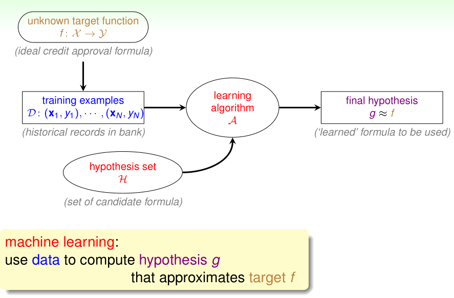
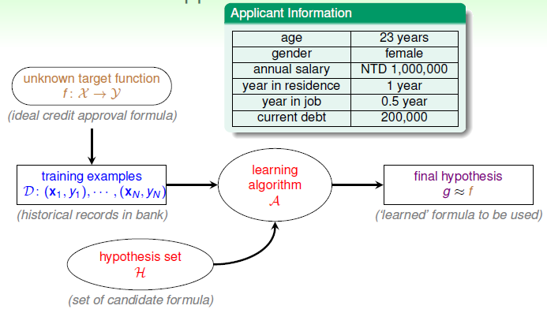
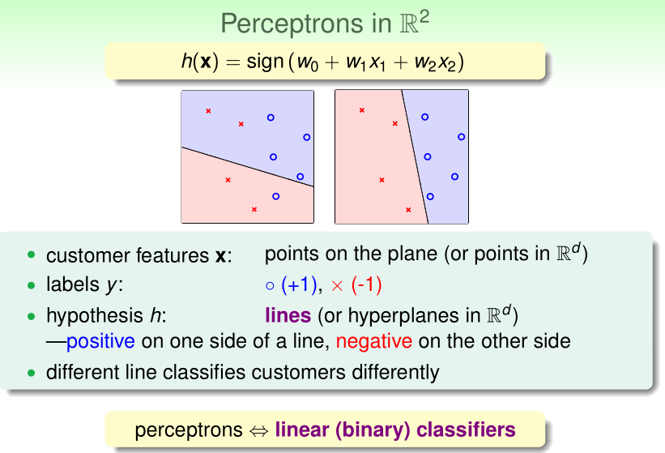
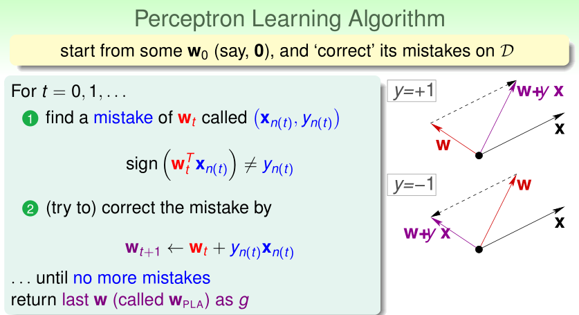
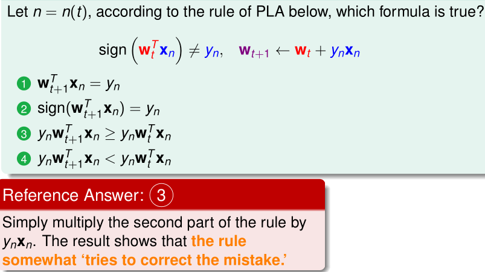
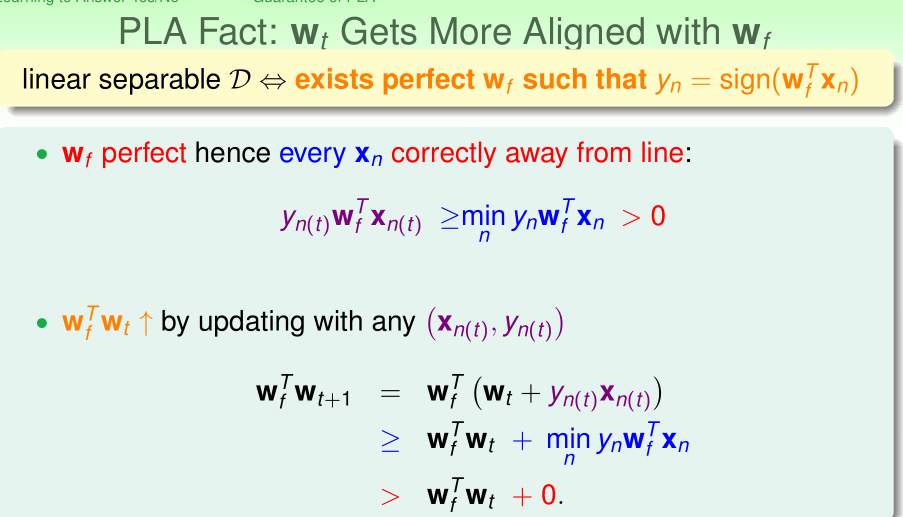
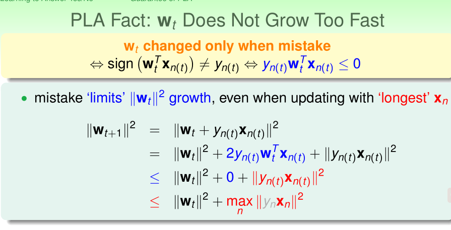

问题：银行根据客户的各项资料，决定是否为客户颁发信用卡？
0x01_感知机
感知机是神经网络的基础，与线性回归（Linerar Regression），逻辑回归（Logistics Regression）等模型也非常类似，是一种典型的线性模型。
原始的感知机主要用于解决二分类问题，比如前面提到的是否颁发信用卡就是一个二分类问题，模拟如下图：

客户的特征可以视为多个向量组合，使用一个权重$w$去跟客户的各项向量$x$做一个內积，再减去设定的一个门槛，从而决定是否为客户颁发信用卡。
假设存在一个完美的函数$f$,该函数是未知的，我们只能够从训练集D中使用算法A，从假设集$\mathcal{H}$中求得一个无限逼近$f$的函数$g$。

为了简化公式，threshold也当做一个维度0，合并到客户的维度里，从而得到一个高维a
$$\begin{aligned} h(\mathbf{x}) &=\operatorname{sign}\left(\left(\sum_{i=1}^{d} w_{i} x_{i}\right)-\text { threshold }\right) \
&=\operatorname{sign}\left(\left(\sum_{i=1}^{d} w_{i} x_{i}\right)+\underbrace{(-\text { threshold })}{w{0}} \cdot \underbrace{(\text { +1})}{w{0}} \right) \ &=\operatorname{sign}\left(\sum_{i=0}^{d} w_{i} x_{i}\right) \ &=\operatorname{sign}\left(\mathbf{w}^{T} \mathbf{x}\right) \end{aligned}$$
0x02_PLA

先忽略$w_{0}$，那么$h(\mathbf{x})$就有两个维度，得到以上二维图其中$\mathbf{X}$代表图上的点，y则代表yes/no，$h$则是这个二维图上的一个个点组成，由此得到的$h$是一个线性分类器（perceptron）。
以上二维图为例，我们要找的$g$有无限多条直线，我们并不可能去对无限多条线一条一条的找，因此通常采用这种方法：
- 先确定一条线，得到参数$w$。
- 每次都根据错误的点进行修正，得到一条新的线，更新$w$。
- 重复上述步骤直到所有的样本点都能够被$w$正确预测。
这种通常称为感知器学习法（PLA,Perceptron Learning Algorithm）

0x03_Fun Time

这道题想表达的意思就是演算法每次都会尝试去修正得更好。
0x04_收敛性
PLA是否会停下来？
答：取决于每次回归后是否仍有错误的点，以及是否线性可分（Linear Separability）。
假设为线性可分，且有完美的$w$，则$w$跟向量$x$，y（任意点）相乘，总存在一个最小值$\min {n} y{n} \mathbf{w}{f}^{T} \mathbf{x}{n}$大于0：

由上可知，每次$w$进行更新，$w_{f}^{T} w_{t+1}$的值就会越来越大（即两者越来越接近），虽然內积越大，代表向量越接近，但是由于还受到向量长度（单位向量）的影响，因此还得对向量做一个标准化，但已经能够说明收敛的趋势了。
对于非完美的$w$，mistake的点的內积会小于等于0；再结合新一轮的$w$由上一轮的$w$加上mistake的点求得，由这两点可做出以下推导：

由此可知，每次$w$成长的速度，最多也就到距离最远的那个点。
接下来对向量进行标准化，假设$w_0$为0，在经过T轮后可得到：
$$
\frac{w_{f}}{\left|w_{f}\right|} \frac{w_{T}}{\left|w_{T}\right|} \geq \sqrt{T} * \text { constant }
$$
推导过程：
经过T轮纠错，由$\mathbf{w}{f}^{T} \mathbf{w}{t+1}\geq \mathbf{w}{f}^{T} \mathbf{w}{t}+\min {n} y{n} \mathbf{w}{t}^{T} \mathbf{x}{n}$推导出：
$$w_{f}^{T} w_{T} \geq w_{f}^{T} w_{T-1}+\min {n} y{n} w_{f}^{T} x_{n} \geq T \min {n} y{n} w_{f}^{T} x_{n}$$
再由$\left|\mathbf{w}{t+1}\right|^{2}\leq\left|\mathbf{w}{t}\right|^{2}+\max {n}\left|y{n} \mathbf{x}{n}\right|^{2}$可推导出：
$$\left|w{T}\right|^{2} \leq\left|w_{T-1}\right|^{2}+\max {n}\left|x{n}\right|^{2} \leq T \max {n}\left|x{n}\right|^{2}\left|w_{T}\right| \leq \sqrt{T} \max {n}\left|x{n}\right|$$
综合上面的式子得到：
$$
\frac{w_{f}^{T}}{\left|w_{f}^{T}\right|} \frac{w_{T}}{\left|w_{T}\right|} \geq \frac{T \min {n} y{n}^{T} w_{f}^{T} x_{n}}{\left|w_{f}^{T}\right| \sqrt{T} \max {n}\left|x{n}\right|}=\sqrt{T} \frac{\min {n} y{n} \frac{w_{f}^{T}}{ \left| w_{f}^{T} \right|} x_{n}}{\max {n}\left|x{n}\right|}=\sqrt{T} * \text { constant }
$$
又因为两条标准化向量最大值为1：
$$
\begin{array}{c}{1 \geq \frac{w_{f}^{T}}{\left|w_{f}^{T}\right|} \frac{w_{T}}{\left|w_{T}\right|} \geq \sqrt{T} * \text { constant }} \ {\frac{1}{\text {constant}^{2}} \geq T}\end{array}
$$
假设令$\max {n}|x|=R, \rho=\min _{n} y{n} \frac{w_{f}^{T}}{\left|w_{f}^{T}\right|} x_{n}$，其中constant为$\frac{\min {n} y{n} \frac{w_{f}^{T}}{ \left| w_{f}^{T} \right|} x_{n}}{\max {n}\left|x{n}\right|}$，则有：
$$T \leq \frac{R^{2}}{\rho^{2}}$$
由此可说明PLA会在有限步内收敛。
0x05_优缺点及改进
PLA优缺点都很明显，优点是简单，易于实现，缺点是，由于开头是设置线性可分的，然而实现并无法知道是否线性可分，即使有$T \leq \frac{R^{2}}{\rho^{2}}$，但$\rho$也是由假设$w_f$得到的，因此假如将PLA用在线性不可分的数据中时，会导致PLA永远都在循环。
为了避免上述问题，将PLA的条件放宽点，不再要求所有的样本都能正确的分开，而是犯错的点尽可能地少，于是问题就转化为了：
$$
\arg \min {w} \sum{n=1}^{N} 1\left{y_{n} \neq \operatorname{sign}\left(w^{T} x_{n}\right)\right}
$$
这个是经典的NP-hard问题，无法求得其最优解，因此只能尽可能的接近其最优解。
根据上述四项，PLA的变种Pocket Algorithm，每次都保留当前最好的$w$，当进行修正后得到新的$w_{new}$，将其与原来的$w$进行总体效果上的对比，保留效果最好的那一个，重复迭代足够多的次数后返回$w_{best}$。
参考：机器学习基石–PLA